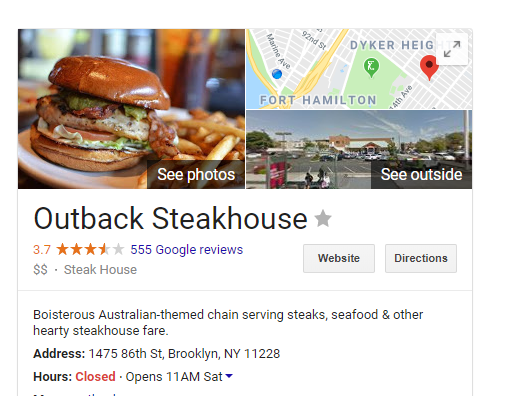
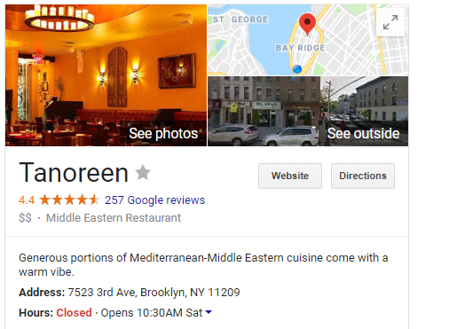
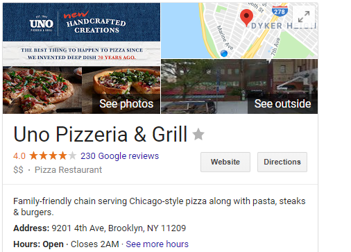

Welcome to the bay ridge restaurant locator!!!!! On this website you can find what restaurant best suits you according its location and what it has.
Restaurants in bay ridge
Do you like nice juicy
steak or/and hamburgers, hover down here

Do you like delicious Mediterranean food, hover here

Do you like pizza, hover here

Do you like japanese, then hover over here